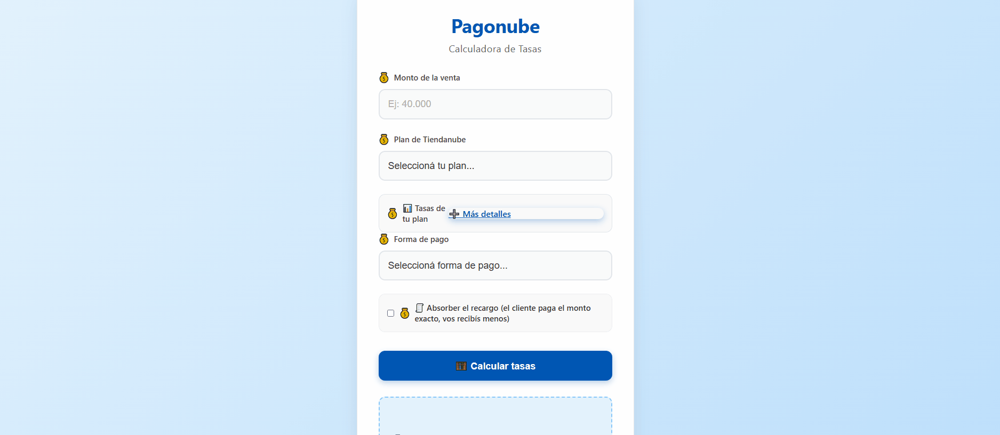
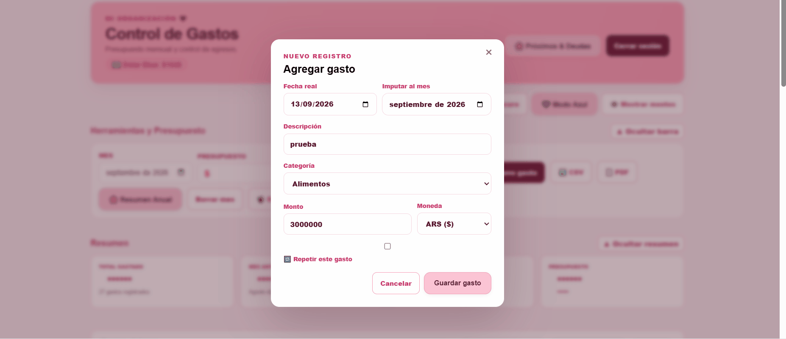
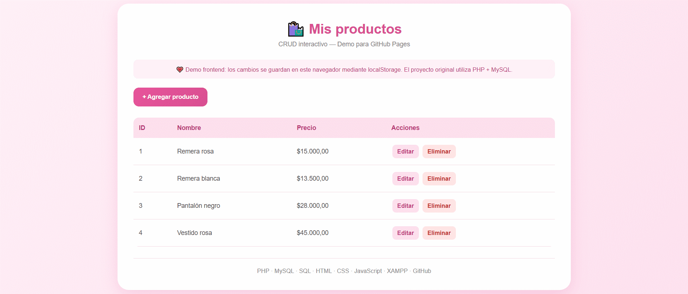
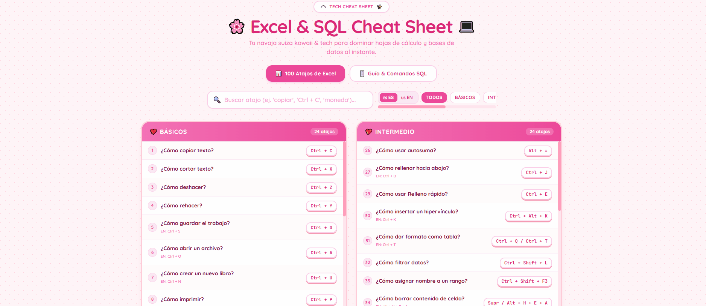

Calculadora de Tasas

Proyecto práctico · Herramienta para e-commerce
Aplicación web desarrollada para simular tasas, cuotas y montos netos según diferentes planes y medios de pago.
Frontend Developer en formación | Experiencia en soporte tecnológico y desarrollo de interfaces funcionales
Disponible para trabajo remoto
¡Hola! Soy Florencia Bagnis, Desarrolladora Frontend y especialista en soporte técnico.
Como Support Guru en Tiendanube, desarrollé una sólida capacidad para comprender las necesidades de los usuarios, investigar inconvenientes y resolver problemas reales en entornos de e-commerce y tecnología.
Finalicé mi formación en Desarrollo Web en Coderhouse, donde adquirí conocimientos de HTML, CSS, SASS, Bootstrap, Git, GitHub y diseño responsive.
Mi objetivo es combinar mi experiencia en Customer Support con el desarrollo de interfaces intuitivas, accesibles, funcionales y visualmente claras. 💗

Proyecto práctico · Herramienta para e-commerce
Aplicación web desarrollada para simular tasas, cuotas y montos netos según diferentes planes y medios de pago.

Proyecto final · Desarrollo Web · Coderhouse
Sitio web responsive desarrollado para una marca de indumentaria inspirada en la estética kawaii. Incluye catálogo, diferentes secciones, formulario de contacto y adaptación a dispositivos móviles.

Proyecto personal · Gestión de gastos
Aplicación web desarrollada para organizar y controlar gastos mensuales de forma simple y privada. Permite registrar, editar y eliminar gastos, gestionar presupuestos y visualizar la información de cada mes.

Proyecto práctico · CRUD con Base de Datos
Aplicación desarrollada para administrar un catálogo de productos. Permite dar de alta nuevos artículos, visualizar el listado completo, modificar información existente y eliminar registros mediante operaciones SQL (INSERT, SELECT, UPDATE y DELETE).

Herramienta interactiva · Productividad & Datos
Herramienta web interactiva para buscar y consultar en tiempo real más de 100 atajos de Excel (con selector bilingüe ES/EN) y comandos esenciales de SQL explicados de forma clara, con ejemplos prácticos y su orden lógico de ejecución.